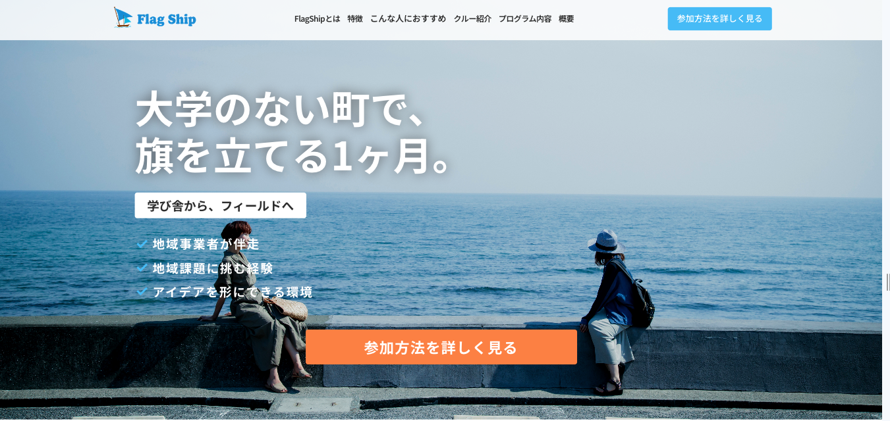
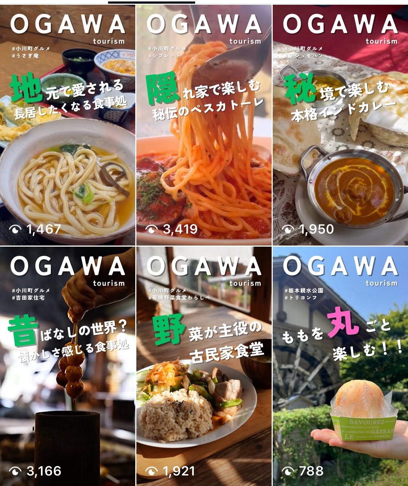
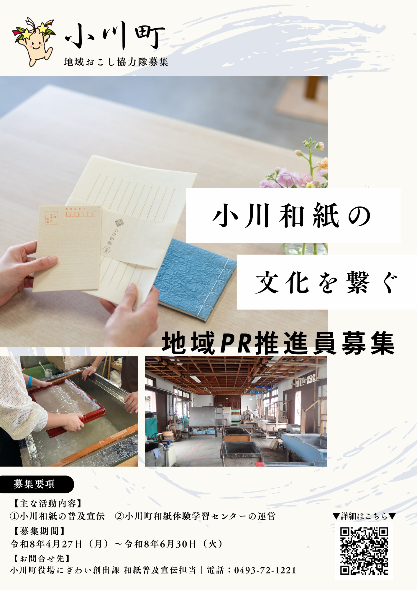
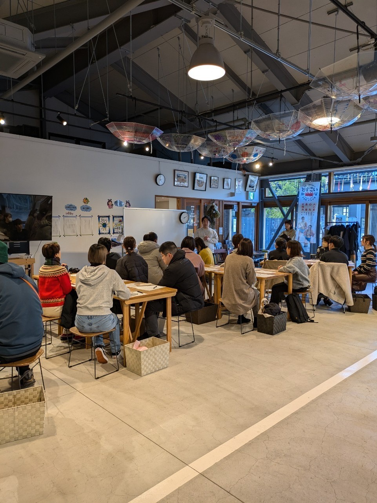
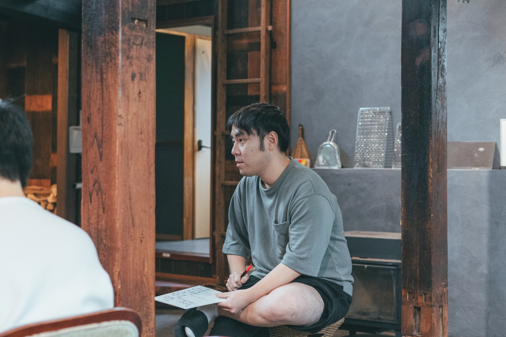
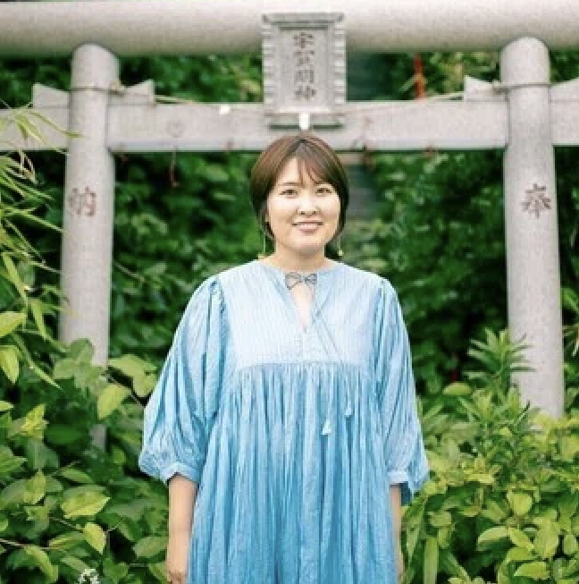
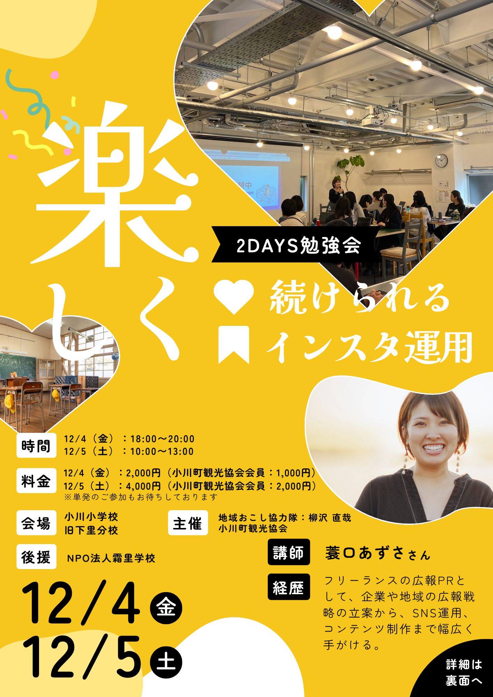
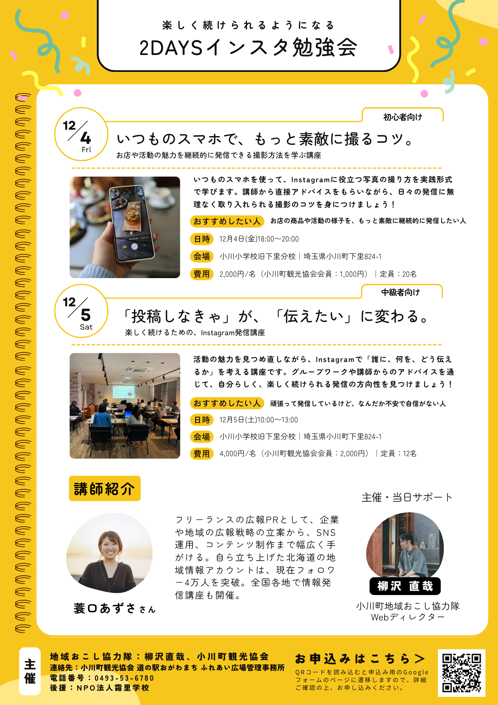

01
01NPO法人
01NPO法人
 02
02地方自治体

03地域事業者

04地方自治体
SCROLL TO EXPLORE
WHAT WE DO
つくるだけでも、提案するだけでもありません。
目の前の課題に必要な専門家が集まり、企画から実行、改善まで同じチームとして動きます。
Google・Meta広告の設計から検証、改善までを継続支援します。
企画、撮影、投稿、分析まで、伝わり続ける運用を一緒につくります。
地域や事業の価値を掘り起こし、読まれる情報へ編集します。
検索と生成AIの双方を見据え、見つけてもらう土台を整えます。
アクセスと利用者の声から、成果につながる改善を積み重ねます。
地域検索で選ばれるための情報整備と口コミ活用を支援します。
設計から配信、顧客との関係づくりまで一貫して伴走します。
目的と運用体制を整理し、使い続けられるサイトを制作します。
伝える順番を設計し、相談や購入につながるページをつくります。
バナーや動画を制作し、数字を見ながら表現を磨きます。
OUR STANCE
立場によって異なる声を丁寧に拾い、本当の課題を一緒に見つけます。
決まった型を売るのではなく、課題に合わせて最適なチームをつくります。
新しい技術を目的にせず、現場で役立つ小さな実践から始めます。
WORKS
自治体、NPO、地域の事業者。規模や業種ではなく、向き合う課題を起点に支援しています。
01NPO法人
LP制作・SEO対策
NPO法人霜里学校
02地方自治体
HP制作・SEO対策
小川町観光協会
地域事業者
LP制作・ロゴ制作
新潟県糸魚川市事業者
地方自治体
Instagram運用・動画編集
おがわまち道の駅ふれあい広場

05地方自治体
チラシ制作・採用企画
小川町

06地域事業者
イベント企画・チラシ制作
カフェ「絲と糸」
 07
07地方自治体
チラシ制作
小川町観光協会
地域事業者
企画・写真撮影
宿「堂道」
 09
09転職支援サービス
LP制作・営業資料・広告運用
転職戦略会議
MEMBERS

01NAOYA YANAGISAWA
Webディレクター / プロジェクトリード
前職でWebマーケティング責任者を経験。現在は小川町を中心にWeb関連施策を多数支援。

02AZUSA MINOGUCHI
Instagram運用者 / 広報支援
館山市で広報支援を行う。観光・飲食関連のInstagram運用で1万フォロワー達成実績多数。
 03
03
NAOMICHI KONNO
カフェ経営 / Webマーケティング支援
SEOを中心とした支援を経て、現在は糸魚川市でカフェ「絲と糸」を経営。
PRICING
MONTHLY SUPPORT
施策・稼働量によって費用は変動します。組織の規模や課題に合わせ、必要な支援だけをご提案します。
はい。地方自治体・中小企業・NPOなど、規模や業種を問わずご相談いただけます。
はい。毎月の振り返りをもとに、施策の追加・変更・縮小が可能です。
無料相談から最短2週間でサポートを開始できます。
HP更新、SNS、広告、AI活用、DX推進などWeb全般についてご相談ください。
A SMALL FIRST STEP
Instagramの課題を聞きながら事業への理解を深め、私たちとの仕事の進め方を体験していただきます。本サポートで有効な提案をするための、最初の一歩です。
無料相談から始めるEVENTS
私たちが関わるイベントや、地域での学びの場をご案内します。


EVENT 01 / APPLICATIONS OPEN
EVENT 02
EVENT 03
FLOW
フォームからお申し込みください。オンライン・対面どちらにも対応します。
約5分現状、課題、目的をじっくりお聞きし、取り組むべきことを整理します。
約60分施策と概算費用をご提示。納得いただけるまで内容を調整します。
最短3営業日契約後、丁寧なオンボーディングから支援をスタートします。
最短2週間LET'S TALK